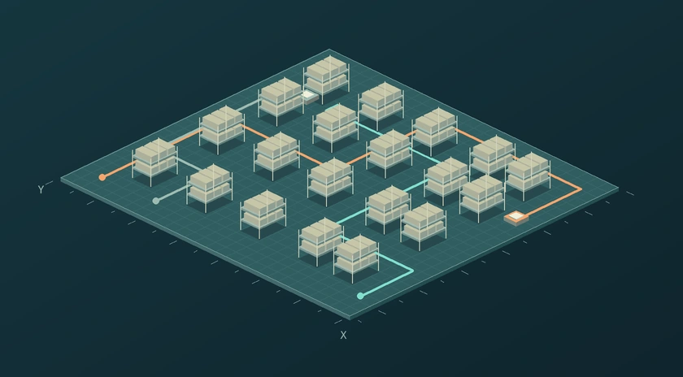

다중로봇 경로계획
공장 안에서 여러 이동로봇이 통로를 공유하고 운반 작업을 수행하는 방법을 연구합니다. 생산 물류 현장에서 관찰한 이동시간과 교통 제약을 경로계획에 반영하는 데 관심이 있습니다.
연구 프로젝트와 논문 ↓
연구 프로젝트와 논문
공개한 연구 프로젝트와 논문을 이곳에 소개합니다.
연구 분야
다중로봇 경로계획
여러 로봇이 같은 시간에 같은 통로를 사용해야 할 때, 경로와 통과 순서를 어떻게 정할 수 있을까요?
실행을 고려한 계획
로봇이 실제로 이동하고 회전하는 데 걸린 시간을 다음 임무의 계획에 어떻게 반영할 수 있을까요?
로봇 운영 최적화
생산라인과 서열 납품 공정이 한 로봇 군을 공유할 때, 서로 다른 납기를 고려해 운반 작업을 어떻게 배분할 수 있을까요?
경력과 학력
산업 경험
생산기술 · 미국 조지아주
생산 순서에 맞춰 자재를 공급하는 JIS 물류 체계를 구축·안정화하는 데 참여했고, 자율이동로봇 23대의 운영을 담당했습니다.
학력
인하대학교
전기전자공학 석사과정 · 2026년 3월 입학
학력
동의대학교
로봇·자동화공학 학사